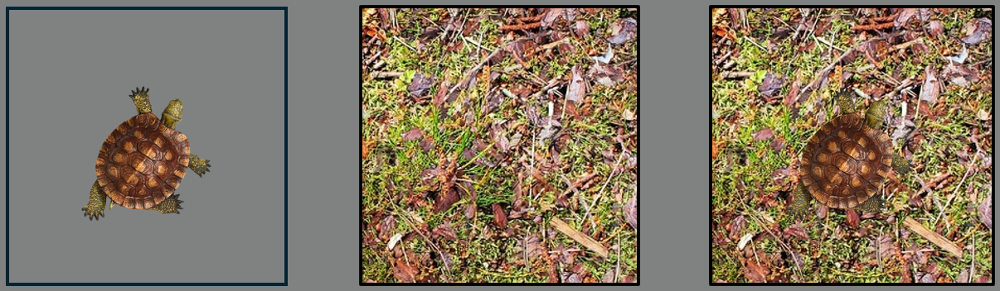
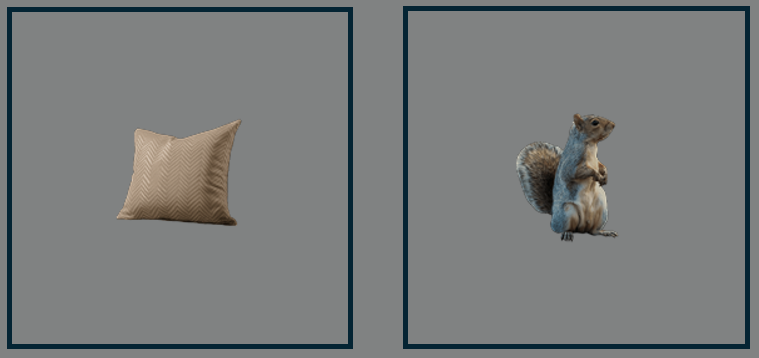
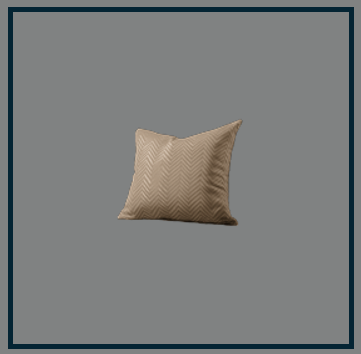
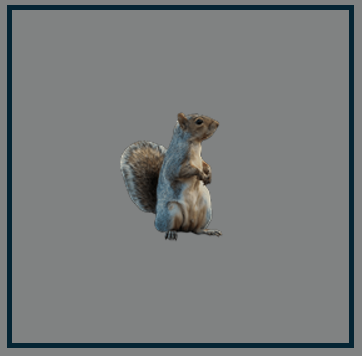
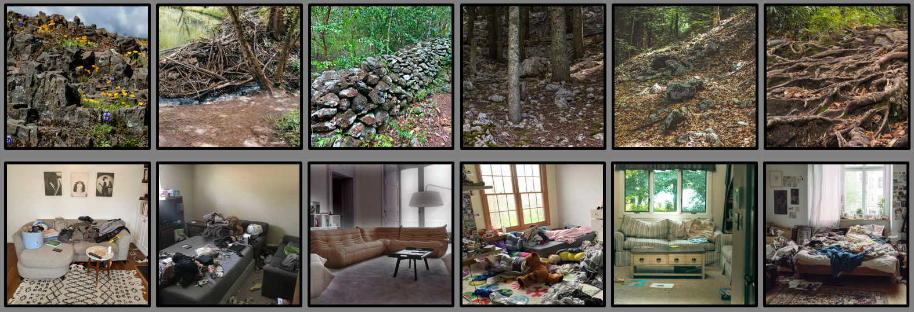

<!doctype html>
<html>
<head>
    <title>SCEPRM2</title>
    <script src="jspsych/dist/jspsych.js"></script>
    <script src="jspsych/dist/plugin-fullscreen.js"></script>
    <script src="jspsych/dist/plugin-html-keyboard-response.js"></script>
    <script src="jspsych/dist/plugin-html-slider-response.js"></script>
    <script src="jspsych/dist/plugin-image-keyboard-response.js"></script>
    <script src="jspsych/dist/plugin-call-function.js"></script>
    <script src="jspsych/dist/plugin-survey-likert.js"></script>
    <script src="jspsych/dist/plugin-survey-text.js"></script>
    <script src="jspsych/dist/plugin-animation.js"></script>
    <script src="jspsych/dist/plugin-external-html.js"></script>
    <script src="jspsych/dist/jspsych-psychophysics.js"></script>
    <script src="jspsych/dist/plugin-preload.js"></script>
    <script src="jatos.js"></script>

    <link href="jspsych/dist/jspsych.css" rel="stylesheet" type="text/css"></link>
    <link href="style.css" rel="stylesheet" type="text/css" />
    <style>

        html, body {
            margin: 0;
            padding: 0;
            overflow: hidden;
            height: 100%;
            width: 100%;
        }

        img {
            will-change: transform;
            transform: translate3d(0, 0, 0);
        }

        canvas#stimulus-canvas {
            position: absolute;
            top: 0;
            left: 0;
            display: none;
        }

        canvas#jspsych-psychophysics-stimulus {
            position: fixed;
            top: 50%;
            left: 50%;
            transform: translate(-50%, -50%);
            max-width: 100vw;
            max-height: 100vh;
            width: auto !important;
            height: auto !important;
            margin: 0;
            padding: 0;
            border: none;
        }

    </style>
</head>
<body>
    <canvas id="stimulus-canvas" width="922" height="922"></canvas>

</body>
  <script>

      const jsPsych = initJsPsych({
          on_finish: function () {
              jsPsych.data.displayData('csv');
              // Convert collected data to CSV format
              const resultCsv = jsPsych.data.get().csv();
              // Submit the data to JATOS and end the study
              jatos.submitResultData(resultCsv, jatos.endStudy);

          }
      });

      // Create timeline array
      const timeline = [];

      // Global image cache
      const imageCache = {};  // now a dictionary

      window.addEventListener('load', () => {
          jatos.onLoad(() => {
              const sonaId = jatos.urlQueryParameters.SONA_ID || -1;
              console.log('sona_participant_id = ' + sonaId);
              jsPsych.data.addProperties({ sona_id: sonaId });

              fetch("image_list.json")
                  .then(response => response.json())
                  .then(images => {
                      // Cache images in a dictionary
                      images.forEach(src => {
                          const img = new Image();
                          img.src = src;
                          imageCache[src] = img;
                      });

                      // Preload images using jsPsych
                      jsPsych.pluginAPI.preloadImages(images, () => {
                          console.log("Total images preloaded:", Object.keys(imageCache).length);
                      });

                      // Optional: preload trial
                      const preload_images = {
                          type: jsPsychPreload,
                          images: images,
                          auto_preload: false
                      };
                      timeline.push(preload_images);

                      // START 4-HOUR TIMEOUT
                      const MAX_DURATION_MS = 4 * 60 * 60 * 1000;
                      setTimeout(() => {
                          const partialData = jsPsych.data.get().json();
                          jatos.appendResultData(partialData);
                          alert("The maximum time for the experiment has been exceeded. The session will now close.");
                          jatos.endStudy();
                      }, MAX_DURATION_MS);
                  });
          });
      });

      /* INITIALIZE SOME VARIABLES */

      const num_steps = 20;
      const stim_dur = 2000; /* milliseconds */
      const fix_dur = 200;

      const practice_reps = 2;    /* 2 x 3 trials - loop this until at least 75% correct  */
      const practice_confidence = 2; /*2 x 3 trials */

      const num_ima_trials = 5; /* 10 repetation of imagination trials */
      const num_ima_reps = 1; /* how often to repeat the 2 orientations */

      const threshold_level = 70; /* the value to staircase to */
      const lower_bound = 60; /* lower than this - increase isibility */
      const upper_bound = 80; /* higher than this - decrease visibility */
      const num_trials_stair_block = 10; /* 10 evaluate acc after this many trials */
      const num_stair_reps = 11; /* 12 number of staircase reps - two blocks - one per tilt */
      const num_objects = 2 /* 2 - inanimated and animated objects within a set */
      const num_ignore_staircases = 11 /* 11 - 3 number of staircases that will not be included in the 70% stopping rule */
      const num_consecutive_stairs = 11 /* 2 number of staircases that obtiaobtained ned 70% acc */

      const num_trials_main = 24; /* 24 needs to be dividable by 2 */
      const num_blocks = 16; /* 16 - 2(repeats) x (2 (cong/incong) x 4(no-ima animate,no-ima inanimate, animate-ima,inanimate-ima) )

      /* Define two sets of stimuli */
      const stimulusSets = 1; /* Math.floor(Math.random() * 2) + 1; */ /* 2 - number of sets. set contain 2 environments and 2 objects */


      /* RESPONSE MAPPING */
      let r_idx = jsPsych.randomization.sampleWithReplacement([0, 1], 1)[0];
      let responses, response_prompt;

      if (r_idx === 0) {
          responses = ['A', 'D'];
          response_prompt = `Yes [${responses[0]}] or no [${responses[1]}]`;
      } else {
          responses = ['D', 'A'];
          response_prompt = `No [${responses[1]}] or yes [${responses[0]}]`;
      }


      /* GLOBAL VARIABLES */
      window.start_vis_level = 92;
      window.vis_level = window.start_vis_level; /* initial value for psychophysics */
      window.visibility_levels = []; /*visibility levels after psychophysics for both objects  */
      window.trl_num = 0;
      window.stair_num = 0;
      window.block_num = 0;
      window.cong_num_quest = 0;

      // Populate the 2D array with initial values (e.g., zeros)
      for (let i = 0; i < stimulusSets; i++) {
          window.visibility_levels[i] = [];  // Initialize each row (set)
          for (let j = 0; j < num_objects; j++) {
              window.visibility_levels[i][j] = 0;  // Assign default value
          }
      }

      /* IMAGE SEQUENCE FUNCTIONS */
      function makeStimSequence(startValue, stopValue, cardinality, stim, scene_example, scene, set, part) {
          if (part == 0) {
              var background = "img/set_" + set.toString() + "_scene_0.png";
              var overlays = [];
              if (stim > 0) {
                  var step = (stopValue - startValue) / (cardinality - 1);
                  for (var i = 0; i < cardinality; i++) {
                      var vis = Math.round(startValue + (step * i));
                      overlays.push("img/set_" + set.toString() + "_obj_" + stim.toString() + "_vis_" + vis.toString() + ".png");
                  }
              } else if (stim == 0) {
                  ranNoiseOrder = jsPsych.randomization.repeat([...Array(20).keys()].map(x => x + 1), 1);
                  for (var i = 0; i < cardinality; i++) {
                      var random_number = ranNoiseOrder[i];
                      overlays.push("img/set_" + set.toString() + "_noise_" + random_number.toString() + ".png");
                  }
              }
              return { background: background, overlays: overlays };

          } if (part == 1) {
              // Fixed background for condition
              console.log("makeStimSequence inputs:", { set, scene, scene_example, part });
              var background = "img/set_" + set.toString() + "_scene_" + scene.toString() + "_example_" + scene_example.toString() + ".png"; 
              var overlays = [];

              if (stim > 0) {
                  var step = (stopValue - startValue) / (cardinality - 1);
                  for (var i = 0; i < cardinality; i++) {
                      var vis = Math.round(startValue + (step * i));
                      overlays.push("img/set_" + set.toString() + "_obj_" + stim.toString() + "_vis_" + vis.toString() + ".png");
                  }
              } else {
                  var ranNoiseOrder = jsPsych.randomization.repeat([...Array(20).keys()].map(x => x + 1), 1);
                  for (var i = 0; i < cardinality; i++) {
                      var random_number = ranNoiseOrder[i];
                      overlays.push("img/set_" + set.toString() + "_noise_" + random_number.toString() + ".png");
                  }
              }

              return { background: background, overlays: overlays };
          }

      };

      /* SOME ESSENTIAL VARS*/
      /* fixation */
      var fixation = {
          type: jsPsychHtmlKeyboardResponse,
          stimulus: '<div id="fixation-cross" style="position: fixed; top: 50%; left: 50%; transform: translate(-50%, -50%); font-size: 30px;">+</div>',
          choices: "NO_KEYS",
          trial_duration: fix_dur,
          data: { test_part: 'fixation' },
          on_load: function () {
              // Reference image logic
              const refImage = new Image();
              refImage.src = "img/set_1_noise_1.png"; // Reference image for alignment

              refImage.onload = function () {
                  const fixationCross = document.getElementById('fixation-cross');
                  if (!fixationCross) {
                      console.warn("Fixation cross not found in DOM.");
                      return; // Exit safely if element doesn't exist
                  }

                  // Calculate image dimensions and position
                  const viewportWidth = window.innerWidth;
                  const viewportHeight = window.innerHeight;

                  const imgWidth = Math.min(refImage.width, viewportWidth);
                  const imgHeight = Math.min(refImage.height, viewportHeight);

                  const imgLeft = (viewportWidth - imgWidth) / 2;
                  const imgTop = (viewportHeight - imgHeight) / 2;

                  // Offset for embedded cross
                  const embeddedCrossOffsetX = refImage.width / 2 - imgWidth / 2;
                  const embeddedCrossOffsetY = refImage.height / 2 - imgHeight / 2;

                  // Position the fixation cross
                  fixationCross.style.left = `${imgLeft + imgWidth / 2 + embeddedCrossOffsetX}px`;
                  fixationCross.style.top = `${imgTop + imgHeight / 2 + embeddedCrossOffsetY}px`;
                  fixationCross.style.transform = 'translate(-50%, -50%)';

                  // Adjust cross size based on image dimensions
                  const crossRatio = 0.05;
                  const crossSize = imgWidth * crossRatio;
                  fixationCross.style.fontSize = `${crossSize}px`;
              };
          }
      };

      /* update trial number */
      var update_trial_number = {
          type: jsPsychCallFunction,
          func: function () {
              window.trl_num++;
          },
          on_finish: function () {
              console.log("Updated trial number:", window.trl_num);
          }
      };


      /* INFORMATION SHEET */
      var information_sheet = {
          type: jsPsychExternalHtml,
          url: "MROS_6649-04_information_v5.0_20210315_PB.html",
          cont_btn: "Continue",
          execute_script: false,
          force_refresh: true,
          on_finish: function () {
              document.querySelector('#jspsych-content').innerHTML = '';
          }
      };
      timeline.push(information_sheet);


      /* CONSENT FORM */
      var consent_sheet = {
          type: jsPsychExternalHtml,
          url: "MROS_6649-04_consent_v5.0_20210315_IRL_PB.html",
          cont_btn: "Start",
          execute_script: false,
          force_refresh: true,
          check_fn: function (elem) {
              const box1 = document.getElementById('consent_checkbox_1');
              const box2 = document.getElementById('consent_checkbox_2');

              if (box1?.checked && box2?.checked) {
                  return true;
              } else {
                  alert("If you wish to participate, you must check both boxes to confirm your consent.");
                  return false;
              }
          },
          on_finish: function () {
              document.querySelector('#jspsych-content').innerHTML = '';
          }
      };
      timeline.push(consent_sheet);

      // Log Prolific ID
      var prolific_ID = {
          type: jsPsychSurveyText,
          questions: [
              { prompt: "Please enter your Prolific ID in the field below.", rows: 2, columns: 40 }
          ],
          on_load: function () {
              // Focus the first text input after it appears
              const input = document.querySelector('textarea');
              if (input) input.focus();
          }
      };
      timeline.push(prolific_ID);


      /* WELCOME MESSAGE */
      var welcome = {
          type: jsPsychHtmlKeyboardResponse,
          stimulus: "Welcome to the experiment. Please turn off your sound. <br> <br> Press any key to begin."
      };
      timeline.push(welcome);

      timeline.push({
          type: jsPsychFullscreen,
          fullscreen_mode: true
      });

      var time_limit_instr = {
          type: jsPsychHtmlKeyboardResponse,
          stimulus: "You have <strong>4</strong> <strong>hours</strong> to complete the entire experiment, though it should take under an hour to finish. <br> " +
              "Take as many breaks in between parts and blocks as you need, but please limit each break to no more than 10 minutes. <br>" +
              "The experiment window will automatically close after 4 hours. <br> <br>" +
              "Press [space] to continue",
          choices: [' '],
      };
      timeline.push(time_limit_instr);


      /* QUESTIONNAIRES*/
      var questionnaire_instr = {
          type: jsPsychHtmlKeyboardResponse,
          data: { test_part: 'vviq', part: 0 },
          stimulus: "Before we begin with the main task, <br> we'd like to ask you to fill out a short questionnaire. <br>" +
              "Please take your time to answer the questions truthfully. <br> <br> " +
              "Press [space] to continue ",
          choices: [' '],
      };

      var VVIQ_instr = {
          type: jsPsychHtmlKeyboardResponse,
          data: { test_part: 'vviq', part: 1 },
          stimulus: "For each item on this questionnaire, try to form a visual image, " +
              "and consider your experience carefully. <br> For any image that you do experience, " +
              "rate how vivid it is using the five-point scale described next. <br>" +
              "If you do not have a visual image, rate vividness as ‘1’.  <br>" +
              "Only use ‘5’ for images that are truly as lively and vivid as real seeing. <br>" +
              "Please note that there are no right or wrong answers to the questions, <br>" +
              "and that it is not necessarily desirable to experience imagery or,  <br> " +
              "if you do, to have more vivid imagery. <br><br>" +
              "Press [space] to start the questionnaire ",
          choices: [' ']
      };

      var scale_VVIQ = [
          "(1) No image at all, you only “know” that you are thinking of the object",
          "(2) Vague and dim",
          "(3) Moderately clear and lively",
          "(4) Clear and reasonably vivid",
          "(5) Perfectly clear and as vivid as real seeing"
      ];

      var vviq_1 = {
          type: jsPsychSurveyLikert,
          data: { test_part: 'vviq', part: 2 },
          preamble: "think of some relative or friend whom you frequently see (but who is not with you at present) and consider carefully the picture that comes before your mind’s eye.",
          questions: [
              { prompt: "The exact contour of face, head, shoulders and body", labels: scale_VVIQ, required: true },
              { prompt: "Characteristic poses of head, attitudes of body etc.", labels: scale_VVIQ, required: true },
              { prompt: "The precise carriage, length of step etc., in walking", labels: scale_VVIQ, required: true },
              { prompt: "The different colours worn in some familiar clothes", labels: scale_VVIQ, required: true },
          ]
      };

      var vviq_2 = {
          type: jsPsychSurveyLikert,
          data: { test_part: 'vviq', part: 3 },
          preamble: "Visualise a rising sun.  Consider carefully the picture that comes before your mind’s eye.",
          questions: [
              { prompt: "The sun rising above the horizon into a hazy sky", labels: scale_VVIQ, required: true },
              { prompt: "The sky clears and surrounds the sun with blueness", labels: scale_VVIQ, required: true },
              { prompt: "Clouds.  A storm blows up with flashes of lightning", labels: scale_VVIQ, required: true },
              { prompt: "A rainbow appears", labels: scale_VVIQ, required: true },
          ]
      };

      var vviq_3 = {
          type: jsPsychSurveyLikert,
          data: { test_part: 'vviq', part: 4 },
          preamble: "Think of the front of a shop which you often go to.  Consider the picture that comes before your mind’s eye.",
          questions: [
              { prompt: "The overall appearance of the shop from the opposite side of the road", labels: scale_VVIQ, required: true },
              { prompt: "A window display including colours, shapes and details of individual items for sale", labels: scale_VVIQ, required: true },
              { prompt: "You are near the entrance. The colour, shape and details of the door", labels: scale_VVIQ, required: true },
              { prompt: "You enter the shop and go to the counter. The counter assistant serves you. Money changes hands", labels: scale_VVIQ, required: true },
          ]
      };

      var vviq_4 = {
          type: jsPsychSurveyLikert,
          data: { test_part: 'vviq', part: 5 },
          preamble: "Finally think of a country scene which involves trees, mountains and a lake.  Consider the picture that comes before your mind’s eye.",
          questions: [
              { prompt: "The contours of the landscape", labels: scale_VVIQ, required: true },
              { prompt: "The colour and shape of the trees", labels: scale_VVIQ, required: true },
              { prompt: "the colour and shape of the lake", labels: scale_VVIQ, required: true },
              { prompt: "A strong wind blows on the trees and on the lake causing waves in the water.", labels: scale_VVIQ, required: true },
          ]
      };

      const saveVVIQData = {
          type: jsPsychCallFunction,
          func: () => {
              const vviqData = jsPsych.data.get().filter({ test_part: "vviq" }).csv();
              jatos.appendResultData(vviqData);
          }
      };


      timeline.push(questionnaire_instr, VVIQ_instr, vviq_1, vviq_2, vviq_3, vviq_4, saveVVIQData);

      var disable_scrollbar = {
          type: jsPsychCallFunction,
          func: function () {
              document.body.style.overflow = 'hidden';
          }
      };
      timeline.push(disable_scrollbar)

      /* TASK EXPLANATION */
      var explain_task = {
          type: jsPsychHtmlKeyboardResponse,
          stimulus: "Thank you! <br> During the rest of this experiment, you will be looking for <strong> objects </strong> in <strong>scenes</strong> (see below) <br>" +
              "<strong>An object</strong> can be either something non-living or living thing <strong>(see</strong> <strong>left)</strong> - we will tell you which object to focus on in each scene. <br> " +
              "<strong>A scene</strong> is the surrounding environment in which the object is located <strong>(see</strong> <strong>middle)</strong>. <br>" +
              "On every trial, your task is to decide whether the object was present in the scene or not <strong>(see</strong> <strong>right)</strong>.<br><br>" +
              "" +
              "<br><br> Press [space] to continue ",
          choices: [' ']
      }; /*  width=600 */
      timeline.push(explain_task);

      /* PRACTICE TRIALS */

      var practice_instruction = {
          type: jsPsychHtmlKeyboardResponse,
          stimulus: function () {
              return `
            We will first start with a few practice trials <br>
            Each time, <strong>one</strong> of two objects will gradually appear in a scene. <br>
            See the examples for the objects below, please take a moment to study these objects:<br><br>
             <br>
            Afterwards, if you saw an object press [${responses[0]}] <br>
            If you did not see an object press [${responses[1]}] <br>
            Please use your left hand to make your response (you will need your right hand later) <br>
            Always keep your eyes fixated on the cross in the middle. <br><br>
            <span id="wait-msg"><strong>Please wait...</strong></span>
        `;
          },
          choices: "NO_KEYS", // Disable any keys before the space key prompt
          on_load: function () {
              // Wait for 5 seconds
              setTimeout(() => {
                  // Change the text to prompt for space key
                  const waitMsg = document.getElementById('wait-msg');
                  waitMsg.innerHTML = "Press [space] to start the practice trials.";

                  // Enable the space key response after 5 seconds
                  jsPsych.pluginAPI.getKeyboardResponse({
                      callback_function: function (info) {
                          jsPsych.finishTrial({
                              rt: info.rt,
                              key_press: info.key
                          });
                      },
                      valid_responses: [' '], // Space key
                      rt_method: 'performance',
                      persist: false,
                      allow_held_key: false
                  });
              }, 5000); // Wait 5 seconds before asking for space key
          }
      };

      timeline.push(practice_instruction);

      var show_dynamic_stimulus = {
          type: jsPsychPsychophysics,
          stimuli: function (trial) {
              dec_trial = jsPsych.evaluateTimelineVariable('stimulus_function')();
              return dec_trial
          }, // placeholder, will be set in on_start
          choices: "NO_KEYS",
          trial_duration: stim_dur,
          canvas_width: 922,
          canvas_height: 922,

      };

      var response_screen = {
          type: jsPsychHtmlKeyboardResponse,
          stimulus: 'Was there an object on the screen?',
          choices: responses,
          prompt: response_prompt,
          data: jsPsych.timelineVariable('data'),
          on_finish: function (data) {
              data.correct = data.response?.toUpperCase() === data.correct_response.toUpperCase();
          },
      };

      /* combine into trial procedure */
      var detection_practice_procedure = {
          timeline: [fixation, show_dynamic_stimulus, response_screen],
          timeline_variables: [
              {
                  stimulus_function: function () {

                      let stim_data = makeStimSequence(1, window.vis_level, num_steps, 1, -1, -1, 1, 0)

                      let stimList = [{
                          obj_type: 'image',
                          file: stim_data.background,
                          show_start_time: 0,
                          show_end_time: stim_dur,
                          origin_center: true,
                          width: '100%',
                          height: '100%'
                      }];

                      let frame_time = Math.round(stim_dur / stim_data.overlays.length);
                      for (let i = 0; i < stim_data.overlays.length; i++) {
                          stimList.push({
                              obj_type: 'image',
                              file: stim_data.overlays[i],
                              show_start_time: i * frame_time,
                              show_end_time: (i + 1) * frame_time,
                              origin_center: true,
                              width: '100%',
                              height: '100%'
                          });
                      }

                      return stimList;

                  },
                  data: { test_part: 'det_practice', correct_response: responses[0].toUpperCase() }
              },

              {
                  stimulus_function: function () {

                      let stim_data = makeStimSequence(1, window.vis_level, num_steps, 2, -1, -1, 1, 0)

                      let stimList = [{
                          obj_type: 'image',
                          file: stim_data.background,
                          show_start_time: 0,
                          show_end_time: stim_dur,
                          origin_center: true,
                          width: '100%',
                          height: '100%'
                      }];

                      let frame_time = Math.round(stim_dur / stim_data.overlays.length);
                      for (let i = 0; i < stim_data.overlays.length; i++) {
                          stimList.push({
                              obj_type: 'image',
                              file: stim_data.overlays[i],
                              show_start_time: i * frame_time,
                              show_end_time: (i + 1) * frame_time,
                              origin_center: true,
                              width: '100%',
                              height: '100%'
                          });
                      }

                      return stimList;

                  },
                  data: { test_part: 'det_practice', correct_response: responses[0].toUpperCase() }
              },
              {
                  stimulus_function: function () {

                      let stim_data = makeStimSequence(1, window.vis_level, num_steps, 0, -1, -1, 1, 0)

                      let stimList = [{
                          obj_type: 'image',
                          file: stim_data.background,
                          show_start_time: 0,
                          show_end_time: stim_dur,
                          origin_center: true,
                          width: '100%',
                          height: '100%'
                      }];

                      let frame_time = Math.round(stim_dur / stim_data.overlays.length);
                      for (let i = 0; i < stim_data.overlays.length; i++) {
                          stimList.push({
                              obj_type: 'image',
                              file: stim_data.overlays[i],
                              show_start_time: i * frame_time,
                              show_end_time: (i + 1) * frame_time,
                              origin_center: true,
                              width: '100%',
                              height: '100%'
                          });
                      }

                      return stimList;

                  },
                  data: { test_part: 'det_practice', correct_response: responses[1].toUpperCase() }
              },
          ],
          sample: {
              type: 'fixed-repetitions',
              size: practice_reps,
          }
      };

      var detection_feedback = {
          type: jsPsychHtmlKeyboardResponse,
          choices: [' '],
          stimulus: function () {
              var trials = jsPsych.data.get().last(practice_reps * 3 * 3).filter({ test_part: 'det_practice' });
              var num_correct = trials.filter({ correct: true }).count();
              var accuracy = Math.round(num_correct / trials.count() * 100);

              if (accuracy > 74) {
                  return "Excellent, you responded correctly on " + num_correct +
                      " out of " + trials.count() + " trials. <br>" +
                      "<br> Press [space] to continue "
              } else {
                  return "This time, you responded correctly on " + num_correct +
                      " out of " + trials.count() + " trials. <br>" +
                      "Let's do a few more practice trials <br> " +
                      "<br> Press [space] to continue "
              }
          }
      };

      var detection_practice_loop_node = {
          timeline: [detection_practice_procedure, detection_feedback],
          loop_function: function (data) {
              var trials = jsPsych.data.get().filter({ test_part: 'det_practice' }).last(practice_reps * 3);
              console.log(trials.values());
              var num_correct = trials.filter({ correct: true }).count();
              var accuracy = Math.round(num_correct / trials.count() * 100);

              if (accuracy > 74) {
                  return false;
              } else {
                  window.vis_level++; /* make it a bit easier then */

                  return true;
              }
          }
      };

      /* Save the data from detecion training */
      const save_det_prec_Data = {
          type: jsPsychCallFunction,
          func: () => {
              const partialData_det_practice = jsPsych.data.get().filter({ test_part: "det_practice" }).csv();
              jatos.appendResultData(partialData_det_practice);
          }
      };

      timeline.push(detection_practice_loop_node, save_det_prec_Data);

      

      /* STAIRCASE DETECTION */

      var stair_instruction = {
          type: jsPsychHtmlKeyboardResponse,
          stimulus: "We will now do a calibration block. <br>" +
              "During this part, you again have to indicate whether you saw an object. <br>" +
              "Over time, it will become harder and harder to see the object. <br>" +
              "Do not worry if you become unsure about whether you saw something or not, that is supposed to happen. <br> " +
              "Just give your best guess on each trial. <br>" +
              "The calibration will take about 5 minutes per object, and there will be 2 overall. <br>" +
              "<br> Press [space] to continue ",
          choices: [' ']
      };
      timeline.push(stair_instruction);

      var response = [responses[1], responses[0], responses[0]];

      window.stairblock_order = jsPsych.randomization.repeat([2, 3], 1);
      window.stair_block = 0; // Define the order for the current object

      object_counter = 1 // number of objects that went over staircase
      trials_staircase_counter = 0 // number of trials completed within a staircases 
      staircases_counter = 0 // number of staircases completed
      var continue_staircasing = true
      var continue_trials = true
      var continue_procedures = true


      var stairblock_instruction = {
          type: jsPsychHtmlKeyboardResponse,
          stimulus: function () {
              if (window.stairblock_order[window.stair_block] == 2) { /* second set, second object (animate) */
                  window.trial_order = jsPsych.randomization.repeat([0, 1], num_trials_stair_block / 2);
                  window.set_num = 1;
                  return "You will be looking for the object below: <br>" +
                      " <br>" +
                      "<br> Press [space] to start "
              }
              else if (window.stairblock_order[window.stair_block] == 3) { /* second set, second object (animate) */
                  window.trial_order = jsPsych.randomization.repeat([0, 2], num_trials_stair_block / 2);
                  window.set_num = 1;
                  return "You will be looking for the object below: <br>" +
                      " <br>" +
                      "<br> Press [space] to start "
              }
          },
          choices: [' '],
          on_finish: function () {
              window.vis_level = window.start_vis_level;
              window.stair_num = 0;
              window.trl_num = 0
              window.accuracy = 0
              window.consecutive_stairs = 0

              // Initialize variables to track consecutive accuracy within the defined window
              window.previous_accuracy_in_range = false; // To track if the previous accuracy met the criteria
              console.log(window.trial_order)
              console.log("Current stair_block:", window.stairblock_order[window.stair_block]);
          }
      };


      var show_dynamic_stimulus = {
          type: jsPsychPsychophysics,
          stimuli: function (trial) {
              stair_trial = jsPsych.evaluateTimelineVariable('stimulus_function')();
              return stair_trial
          }, // placeholder, will be set in on_start
          choices: "NO_KEYS",
          trial_duration: stim_dur,
          canvas_width: 922,
          canvas_height: 922,

      };

      var response_screen = {
          type: jsPsychHtmlKeyboardResponse,
          choices: responses,
          stimulus: 'Was there an object on the screen?',
          prompt: response_prompt,
          data: function () {
              window.stim_id = window.trial_order[window.trl_num];
              return { test_part: 'stair_test', correct_response: response[window.stim_id], stim_id: window.stim_id, set: 1, vis_level: window.vis_level, trial_within_block: window.trl_num + 1, block_num: window.stair_num+1}
          },
          on_finish: function (data) {
              data.correct = data.response?.toUpperCase() === data.correct_response.toUpperCase();
          }
      };

      var within_staircase_procedure = {
          timeline: [fixation, show_dynamic_stimulus, response_screen, update_trial_number],
          timeline_variables: [
              {
                  stimulus_function: function () {

                      let stim_id = window.trial_order[window.trl_num];
                      let stim_data = makeStimSequence(1, window.vis_level, num_steps, stim_id, -1, -1, window.set_num, 0);

                      let stimList = [{
                          obj_type: 'image',
                          file: stim_data.background,
                          show_start_time: 0,
                          show_end_time: stim_dur,
                          origin_center: true,
                          width: '100%',
                          height: '100%'
                      }];

                      let frame_time = Math.round(stim_dur / stim_data.overlays.length);
                      for (let i = 0; i < stim_data.overlays.length; i++) {
                          stimList.push({
                              obj_type: 'image',
                              file: stim_data.overlays[i],
                              show_start_time: i * frame_time,
                              show_end_time: (i + 1) * frame_time,
                              origin_center: true,
                              width: '100%',
                              height: '100%'
                          });
                      }

                      return stimList;

                  }
              }]

      };

      var condition_within_staircase = {
          timeline: [within_staircase_procedure],
          conditional_function: function () {
              if (window.trl_num < window.trial_order.length) {
                  continue_trials = true;
                  console.log("Condition within staircase triggered:", continue_trials);

                  return true;
              } else {
                  continue_trials = false;
                  console.log("Condition within staircase triggered:", continue_trials);
                  return false;
              }
          }
      };

      var within_staircase_loop = {
          timeline: [condition_within_staircase],
          loop_function: function () {
              if (continue_trials == true) {
                  return true;
              } else {
                  return false;
              }
          }
      };

      var stair_update = {
          type: jsPsychCallFunction,
          func: function () {
              var trials = jsPsych.data.get().last(num_trials_stair_block * 4).filter({ test_part: 'stair_test' }); /* count timeline events */
              var num_correct = trials.filter({ correct: true }).count();
              var accuracy = Math.round(num_correct / trials.count() * 100); // Ensure accuracy is calculated
              var prev_vis_level = window.vis_level;

              console.log("Accuracy:", accuracy); // Debug accuracy value              

              if (accuracy > upper_bound) {
                  window.vis_level = prev_vis_level - Math.round((accuracy - 70) / 10 * 2);
                  window.consecutive_stairs = 0

              } else if (accuracy < lower_bound) {
                  window.vis_level = prev_vis_level + Math.round((70 - accuracy) / 10 * 2);
                  window.consecutive_stairs = 0
              } else if (accuracy >= lower_bound && accuracy <= upper_bound) {
                  window.consecutive_stairs++
                  console.log("Number of consecutive stairs:", window.consecutive_stairs); //
              }

              if (window.vis_level > 80) {
                  window.vis_level = 80;
                  window.consecutive_stairs = 0
              }

          },
          on_finish: function () {
              window.accuracy = accuracy
              console.log("Updated visibility level:", window.vis_level);
          }
      };

      var update_stair_number = {
          type: jsPsychCallFunction,
          func: function () {
              if (window.stair_num >= num_stair_reps) {
                  // Save visibility level for the current object after all staircase reps
                  if (window.stairblock_order[window.stair_block] == 2) {
                      window.visibility_levels[0] = window.vis_level;
                  }
                  else if (window.stairblock_order[window.stair_block] == 3) {
                      window.visibility_levels[1] = window.vis_level;
                  }
                  // Log the saved visibility level
                  console.log(`Final visibility level for object ${window.stairblock_order[window.stair_block]} on staircase ${window.stair_num}:`, window.vis_level);

                  if (object_counter == num_objects * stimulusSets) {
                      // Output the final visibility levels for both objects
                      console.log("Final visibility levels:", visibility_levels);
                      continue_procedures = false
                      return continue_staircasing = false
                  }

                  object_counter++
                  window.stair_block++
                  console.log("Staircase finished, stopping loop.");
                  return continue_staircasing = false
              }
              else if ((window.stair_num >= num_ignore_staircases) && (window.consecutive_stairs >= num_consecutive_stairs)) {
                  // Save visibility level for the current object after all staircase reps
                  if (window.stairblock_order[window.stair_block] == 2) {
                      window.visibility_levels[0] = window.vis_level;

                  }
                  else if (window.stairblock_order[window.stair_block] == 3) {
                      window.visibility_levels[1] = window.vis_level;

                  }
                  if (object_counter == num_objects * stimulusSets) {
                      console.log("Final visibility levels:", visibility_levels);
                      continue_procedures = false

                  }
                  console.log(`Final visibility level for object ${window.stairblock_order[window.stair_block]}:`, window.vis_level);
                  object_counter++
                  window.stair_block++
                  // Output the final visibility levels for both objects
                  return continue_staircasing = false

              } else {
                  if (window.stairblock_order[window.stair_block] === 2) {
                      window.trial_order = jsPsych.randomization.repeat([0, 1], num_trials_stair_block / 2);
                      window.set_num = 1;
                  }
                  else if (window.stairblock_order[window.stair_block] === 3) {
                      window.trial_order = jsPsych.randomization.repeat([0, 2], num_trials_stair_block / 2);
                      window.set_num = 1;
                  }

                  // Increment staircase number if not terminating
                  window.stair_num++;
                  window.trl_num = 0;
                  console.log("Continuing staircasing...", window.stair_num);
                  return continue_staircasing = true
              }

          }
      };

      var between_staircase_procedure = {
          timeline: [within_staircase_loop, stair_update, update_stair_number],
          loop_function: function () {
              if (continue_staircasing == true) {
                  return true;
              }
              else {
                  return false;

              }
          }
      };

      var between_staircase_loop = {
          timeline: [between_staircase_procedure],
          loop_function: function () {
              if (continue_staircasing == true) {
                  return true;
              } else {
                  return false;
              }
          }
      };

      var between_objects_loop = {
          timeline: [stairblock_instruction, between_staircase_loop],
          loop_function: function () {
              if (continue_procedures == true) {
                  return true;
              } else {
                  window.trl_num = 0;
                  return false;
              }
          }
      };


      /* Save the data from starecase procedure */
      const save_stair_test_Data = {
          type: jsPsychCallFunction,
          func: () => {
              const partialData_stair_test = jsPsych.data.get().filter({ test_part: "stair_test" }).csv();
              jatos.appendResultData(partialData_stair_test);
          }
      };

      timeline.push(between_objects_loop, save_stair_test_Data);
      
      /* PRACTICE IMAGERY */
      var instr_imagery = {
          type: jsPsychHtmlKeyboardResponse,
          stimulus: "During the experiment, we will sometimes ask you <br> " +
              "to also imagine an object while you are looking at the scene. <br> " +
              "You will always be asked to imagine the same object for a few trials in a row. <br>" +
              "Again, always keep your eyes open and fixated on the cross in the middle. <br>" +
              "You will indicate your experience by dragging a slider with your mouse. <br>" +
              "We will now practice this. <br>" +
              "<br> Press [space] to continue",
          choices: [' ']
      }
      timeline.push(instr_imagery);

      window.order_ima = jsPsych.randomization.repeat([2, 3], num_ima_reps);
      window.ima_block = 0;

      for (var block = 0; block < (num_ima_reps * 2); block++) {

          var start_ima_block = {
              type: jsPsychHtmlKeyboardResponse,
              stimulus: function () {

                  if (window.order_ima[window.ima_block] == 2) {
                      window.set_num = 1;
                      var stim_pic = "img/set_1_obj_1_example_ima.png";
                  } else if (window.order_ima[window.ima_block] == 3) {
                      window.set_num = 1;
                      var stim_pic = "img/set_1_obj_2_example_ima.png";
                  };


                  window.ima_block++

                  return "For the next few trials, please imagine the object below: <br> " +
                      " <br>" +
                      "Imagine the object as vividly as possible, as if it was actually presented on the screen. <br> " +
                      "Please keep your eyes open and look at the scene while imagining. <br>" +
                      "After each trial, you will be asked to rate the vividness of your imagery <br> " +
                      "on a scale from not vivid at all to perfectly clear and as vivid as real seeing. <br><br>" +
                      "<br> <br> Press [space] to continue "
              },
              choices: [' ']
          };

          var show_dynamic_noise = {
              type: jsPsychPsychophysics,
              stimuli: function (trial) {
                  ima_prec_trial = jsPsych.evaluateTimelineVariable('stimulus_function')();
                  return ima_prec_trial
              }, // placeholder, will be set in on_start
              choices: "NO_KEYS",
              trial_duration: stim_dur,
              canvas_width: 922,
              canvas_height: 922,

          };

          var ima_response = {
              type: jsPsychHtmlSliderResponse,
              labels: ['Not vivid at all', '|', '|', '|', 'Very vivid'],
              stimulus: 'How vividly did you imagine the object?',
              require_movement: true,
              data: { test_part: 'ima_practice' }
          };

          var ima_procedure = {
              timeline: [fixation, show_dynamic_noise, ima_response],
              timeline_variables: [
                  {
                      stimulus_function: function () {

                          let stim_id = window.trial_order[window.trl_num];
                          let stim_data = makeStimSequence(1, window.vis_level, num_steps, 0, -1, -1, window.set_num, 0);

                          let stimList = [{
                              obj_type: 'image',
                              file: stim_data.background,
                              show_start_time: 0,
                              show_end_time: stim_dur,
                              origin_center: true,
                              width: '100%',
                              height: '100%'
                          }];

                          let frame_time = Math.round(stim_dur / stim_data.overlays.length);
                          for (let i = 0; i < stim_data.overlays.length; i++) {
                              stimList.push({
                                  obj_type: 'image',
                                  file: stim_data.overlays[i],
                                  show_start_time: i * frame_time,
                                  show_end_time: (i + 1) * frame_time,
                                  origin_center: true,
                                  width: '100%',
                                  height: '100%'
                              });
                          }

                          return stimList;

                      }
                  }],
              repetitions: num_ima_trials
          };

          timeline.push(start_ima_block, ima_procedure);
      };

      /* Save the data from imagination training */
      const save_ima_prac_Data = {
          type: jsPsychCallFunction,
          func: () => {
              const partialData_ima_practice = jsPsych.data.get().filter({ test_part: "ima_practice" }).csv();
              jatos.appendResultData(partialData_ima_practice);
          }
      };

      timeline.push(save_ima_prac_Data)

      /* VISIBILITY PRACTICE */
      var confidence_instruction1 = {
          type: jsPsychHtmlKeyboardResponse,
          stimulus: "Well done! <br><br> The final part is that during the main task, <br>" +
              "in trials in which you don't have to imagine, immediately after you indicated that you did or did not  <br>" +
              "see a stimulus, you will also be asked how vividly did you see the object. <br> <br>" +
              "<br> Press [space] to continue",
          choices: [' ']
      };
      timeline.push(confidence_instruction1);

      var confidence_instruction2 = {
          type: jsPsychHtmlKeyboardResponse,
          stimulus: "The lowest end of the scale reflects that the stimulus was not vivid at all, you barely saw anything. <br>" +
              "The highest end of the scale reflects that the stimulus was very vivid and clearly visible. <br><br>" +
              "You will indicate your experience by dragging a slider with your mouse. <br>" +
              "<br> Press [space] to do a few practice trials",
          choices: [' ']
      };
      timeline.push(confidence_instruction2);

      var visibility_response = {
          type: jsPsychHtmlSliderResponse,
          labels: ['Not vivid at all', '|', '|', '|', 'Very vivid'],
          stimulus: 'How vividly did you see the object?',
          require_movement: true, // to make sure the participant responds
      };

      window.order_confPrac = jsPsych.randomization.repeat([0, 1, 2], practice_confidence);
      window.trl_num = 0;
      console.log("Reset trial number:", window.trl_num);

      for (var prac = 0; prac < (practice_confidence * 3); prac++) {

          var trial_type = function () {
              let index = window.order_confPrac[window.trl_num];

              if (index === 0) {
                  index_stim = 0;
                  window.set_num = 1;
                  window.obj = 0;/* first set, nosie */
              } else if (index === 1) {
                  index_stim = 0;
                  window.set_num = 1;
                  window.obj = 1; /* first set, first object (inanimate) */
              } else if (index === 2) {
                  index_stim = 1;
                  window.set_num = 1;
                  window.obj = 2;/* first set, second object (inanimate) */
              }

              console.log("Trial:", window.trl_num, "Index Used:", index, "Visibility Level:", window.visibility_levels[index]);

              let stim_data = makeStimSequence(1, window.visibility_levels[index_stim], num_steps, window.obj, -1, -1, window.set_num, 0);

              let stimList = [{
                  obj_type: 'image',
                  file: stim_data.background,
                  show_start_time: 0,
                  show_end_time: stim_dur,
                  origin_center: true,
                  width: '100%',
                  height: '100%'
              }];

              let frame_time = Math.round(stim_dur / stim_data.overlays.length);
              for (let i = 0; i < stim_data.overlays.length; i++) {
                  stimList.push({
                      obj_type: 'image',
                      file: stim_data.overlays[i],
                      show_start_time: i * frame_time,
                      show_end_time: (i + 1) * frame_time,
                      origin_center: true,
                      width: '100%',
                      height: '100%'
                  });
              }

              return stimList;
          };

          var show_dynamic_noise = {
              type: jsPsychPsychophysics,
              stimuli: function (trial) {
                  vis_prec_trial = trial_type();
                  return vis_prec_trial
              }, // placeholder, will be set in on_start
              choices: "NO_KEYS",
              trial_duration: stim_dur,
              canvas_width: 922,
              canvas_height: 922,

          };

          var response_screen = {
              type: jsPsychHtmlKeyboardResponse,
              choices: responses,
              stimulus: 'Was there an object on the screen?',
              prompt: response_prompt,
              data: function () {

                  let responseIndex = window.obj;

                  // Debugging: Check if responseIndex is valid
                  if (responseIndex === undefined || response[responseIndex] === undefined) {
                      console.error("Error: Invalid responseIndex", responseIndex, "resopone[responseIndex] ", response[responseIndex],"trl_num:", window.trl_num);
                  }

                  return {
                      test_part: 'prac_conf',
                      correct_response: response[responseIndex] || "default_response"
                  };

              },
              on_finish: function (data) {
                  console.log("Recorded response:", data.response, "Expected:", data.correct_response);

                  if (data.correct_response) {
                      data.correct = data.response?.toUpperCase() === data.correct_response.toUpperCase();
                  } else {
                      console.warn("Missing correct_response, skipping comparison.");
                  }
              }
          };

          timeline.push(fixation, show_dynamic_noise, response_screen, visibility_response, update_trial_number);

      };

      /* Save the data from confidence parctice */
      const save_conf_prac_Data = {
          type: jsPsychCallFunction,
          func: () => {
              const partialData_prac_conf = jsPsych.data.get().filter({ test_part: "prac_conf" }).csv();
              jatos.appendResultData(partialData_prac_conf);
          }
      };

      timeline.push(save_conf_prac_Data)

      /* MAIN EXPERIMENT */
      var main_start1 = {
          type: jsPsychHtmlKeyboardResponse,
          stimulus: "We will now continue to the main part of the experiment. <br>" +
              "During this part, in each trial, one of the object will appear in one of these scenes below:<br><br>" +
              "</img> <br>" +
              "Please take a moment to study these scenes.<br><br>" +
              "Press [space] to continue ",
          choices: [' ']
      };

      var main_start2 = {
          type: jsPsychHtmlKeyboardResponse,
          stimulus:
              "There will be " + num_blocks + " blocks in total. <br> " +
              "During each block, an object will be presented on 50% of the trials. <br> " +
              "Additionally, during each block you will be asked to either imagine the object or not. <br>" +
              "When instructed to do so, please imagine the object as vividly as possible, as if it was actually presented on the screen. <br>" +
              "Your task is again to indicate whether an object was presented or not and how vividly you imagined or saw the object. <br>" +
              "Do not worry if you become unsure about whether you saw something or not, that is supposed to happen. <br> " +
              "Just give your best guess on each trial. <br>" +
              "Feel free to take a short break (not more than 10 minutes) at the start of a new block whenever you want to. <br> " +
              "<br> Press [space] to continue ",
          choices: [' ']
      };
      timeline.push(main_start1, main_start2);


      const condition_config = {
          1: { obj: 1, scene: 1, set_num: 1, ima: false }, /* set 1 first object (inanimate) - no ima  */
          2: { obj: 1, scene: 1, set_num: 1, ima: true }, /* set 1 first object (inanimate) - ima  */
          3: { obj: 2, scene: 2, set_num: 1, ima: false }, /* set 1 second object (animate) - no ima  */
          4: { obj: 2, scene: 2, set_num: 1, ima: true } /*  set 1 second object (animate) - ima  */
      };

      /* create randomization */
      condition_order = jsPsych.randomization.repeat([1, 2, 3, 4], num_blocks / 4);

      function createPart1Blocks() {
          for (let b = 0; b < num_blocks; b++) {
              buildExperimentTimeline(b);
          }
      }

      function buildExperimentTimeline(block) {

          const current = condition_config[condition_order[block]];

          window.obj_num = current.obj;
          window.scene = current.scene;
          window.set_num = current.set_num;

          if (window.obj_num == 1) {
              var object_vis_level = 1;
          } else {
              var object_vis_level = 0;
          }

          const stim_pic = `img/set_1_obj_${current.obj}_example.png`;
          const ima_instr = current.ima
              ? "<strong>imagine the object</strong> (see above)"
              : "do <strong>not</strong> imagine";

          const block_start = {
              type: jsPsychHtmlKeyboardResponse,
              stimulus: function () {
                  window.trl_num = 0;
                  console.log("Block", block + 1, "Visibility levels:", window.visibility_levels[object_vis_level]);
                  return `<br> This is block ${block + 1} out of ${num_blocks}
                    <br> During this block you will see the object below:
                     <br>
                    <br> Please ${ima_instr} during each trial. <br><br>
                    <br><br> Press [space] to continue`;
              },
              choices: [' ']
          };

          // Create a sub-timeline for this block
          var generate_trials_block = {
              timeline: []
          };

          let example_nums = [1, 2, 3, 4, 5, 6];
          let congruent_scene = window.scene;
          let incongruent_scene = (window.scene === 1) ? 2 : 1;

          // Build the trial_order array
          let trial_order = [];

          example_nums.forEach(example => {
              trial_order.push({
                  stim: window.obj_num,
                  scene: congruent_scene,
                  scene_example: example,
                  congruency: 0,
                  object_present: 1
              });
              trial_order.push({
                  stim: 0,
                  scene: congruent_scene,
                  scene_example: example,
                  congruency: 0,
                  object_present: 0
              });
              trial_order.push({
                  stim: window.obj_num,
                  scene: incongruent_scene,
                  scene_example: example,
                  congruency: 1,
                  object_present: 1
              });
              trial_order.push({
                  stim: 0,
                  scene: incongruent_scene,
                  scene_example: example,
                  congruency: 1,
                  object_present: 0
              });
          });

          trial_order = jsPsych.randomization.shuffle(trial_order);

          // Build each trial and push to timeline
          trial_order.forEach((trial, trl) => {

              (function (trial) {  // <- This captures the current trial uniquely

                  let show_dynamic_stimulus = {
                      type: jsPsychPsychophysics,
                      stimuli: function () {
                          // SAFELY logs the current trial info
                          console.log("makeStimSequence inputs:", {
                              set: window.set_num,
                              stim: trial.stim,
                              scene: trial.scene,
                              scene_example: trial.scene_example,
                              vis: window.visibility_levels[object_vis_level],
                              part: 1
                          });

                          let stim_data = makeStimSequence(
                              1,
                              window.visibility_levels[object_vis_level],
                              num_steps,
                              trial.stim,
                              trial.scene_example,
                              trial.scene,
                              window.set_num,
                              1
                          );

                          let stimList = [{
                              obj_type: 'image',
                              file: stim_data.background,
                              show_start_time: 0,
                              show_end_time: stim_dur,
                              origin_center: true,
                              width: '100%',
                              height: '100%'
                          }];

                          let frame_time = Math.round(stim_dur / stim_data.overlays.length);
                          for (let i = 0; i < stim_data.overlays.length; i++) {
                              stimList.push({
                                  obj_type: 'image',
                                  file: stim_data.overlays[i],
                                  show_start_time: i * frame_time,
                                  show_end_time: (i + 1) * frame_time,
                                  origin_center: true,
                                  width: '100%',
                                  height: '100%'
                              });
                          }

                          return stimList;
                      },
                      choices: "NO_KEYS",
                      trial_duration: stim_dur,
                      canvas_width: 922,
                      canvas_height: 922,
                      data: {
                          test_part: 'main_test',
                          stim_id: trial.stim,
                          set: window.set_num,
                          scene: trial.scene,
                          example: trial.scene_example,
                          congruency: trial.congruency,
                          object_present: trial.object_present,
                          trial_within_block: trl+1,
                          block_num: block + 1,
                          vis_level: window.visibility_levels[object_vis_level],
                          imagine: current.ima
                      }
                  };
                  let response_screen = {
                      type: jsPsychHtmlKeyboardResponse,
                      choices: responses,
                      stimulus: 'Was there an object on the screen?',
                      prompt: response_prompt,
                      data: function () {
                          let responseIndex = trial.stim;

                          // Debugging: Check if responseIndex is valid
                          if (responseIndex === undefined || response[responseIndex] === undefined) {
                              console.error("Error: Invalid responseIndex", responseIndex, "resopone[responseIndex] ", response[responseIndex], "trl_num:", window.trl_num);
                          }

                          return {
                              test_part: 'conf_main',
                              correct_response: response[responseIndex] || "default_response"
                          };

                      },
                      on_finish: function (data) {
                          console.log("Recorded response:", data.response.toUpperCase(), "Expected:", data.correct_response);

                          if (data.correct_response) {
                              data.correct = data.response?.toUpperCase() === data.correct_response.toUpperCase();
                          } else {
                              console.warn("Missing correct_response, skipping comparison.");
                          }
                      }
                  };

                  let vividnessvisibility_screen = {
                      type: jsPsychHtmlSliderResponse,
                      labels: ['Not vivid at all', '|', '|', '|', 'Very vivid'],
                      stimulus: function () {
                          let block_type = condition_order[block];
                          return ([1, 3].includes(block_type))
                              ? 'How vividly did you see the object?'
                              : 'How vividly did you imagine the object?';
                      },
                      require_movement: true,
                      data: { test_part: 'vividness_q' }
                  };

                  generate_trials_block.timeline.push(
                      fixation,
                      show_dynamic_stimulus,
                      response_screen,
                      vividnessvisibility_screen,
                      update_trial_number
                  );

              })(trial);  // ← This immediately runs the function with the current trial
          });

          /* ask about imagery */
          var check_imagery = {
              type: jsPsychHtmlKeyboardResponse,
              choices: ['1', '2'],
              stimulus: 'Check! <br> Did you imagine an object during this block?',
              prompt: 'Yes [1] or no [2]',
              data: function () {
                  if (condition_order[block] == 1 || condition_order[block] == 3) {
                      return { test_part: 'ima_check', correct_response: '2' }
                  } else if (condition_order[block] == 2 || condition_order[block] == 4) {
                      return { test_part: 'ima_check', correct_response: '1' }
                  };
              },
              on_finish: function (data) {
                  data.correct = data.response?.toUpperCase() === data.correct_response.toUpperCase();
              }
          };

          var feedback_imagery = {
              type: jsPsychHtmlKeyboardResponse,
              choices: [' '],
              stimulus: function () {
                  var trials = jsPsych.data.get().last(10).filter({ test_part: 'ima_check' });
                  var num_correct = trials.filter({ correct: true }).count();
                  if (num_correct == 0) {
                      return "That's incorrect, please read the instructions carefully. <br>" +
                          "<br> Press [space] to continue"
                  } else if (num_correct > 0) {
                      return "Excellent! <br><br> Press [space] to continue"
                  }
              }
          };

          // Add to the main timeline
          timeline.push(block_start);
          timeline.push(generate_trials_block);
          timeline.push(check_imagery, feedback_imagery);

          /* Save the data from main part */
          const save_main_Data = {
              type: jsPsychCallFunction,
              func: () => {
                  const partialData_main_part = jsPsych.data.get().filter(trial =>
                      ['main_test', 'conf_main', 'vividness_q', 'ima_check'].includes(trial.test_part)
                  ).csv();

                  jatos.appendResultData(save_main_Data);
              }
          };

          timeline.push(save_main_Data)

      };

      createPart1Blocks()


      /* CONGRUENCY CHECK */

      var cong_check_start = {
          type: jsPsychHtmlKeyboardResponse,
          stimulus: "Thank you!. <br>" +
              "In this final section, you will be asked about the scenes and objects that you have experienced during the experiment. <br> " +
              "<br> Press [space] to continue ",
          choices: [' '],
          on_finish: function () {
              window.trl_num = 0;
          }
      };

      timeline.push(cong_check_start);

      /* create randomization */
      num_of_pairs = num_objects * stimulusSets * 12 //exmamples
      all_comb = Array.from({ length: num_of_pairs }, (_, i) => i)
      pairs_order = jsPsych.randomization.repeat(all_comb, 1);
      

      var all_images = [
          "img/set_1_animate_example_1.png",
          "img/set_1_animate_example_2.png",
          "img/set_1_animate_example_3.png",
          "img/set_1_animate_example_4.png",
          "img/set_1_animate_example_5.png",
          "img/set_1_animate_example_6.png",
          "img/set_1_animate_example_7.png",
          "img/set_1_animate_example_8.png",
          "img/set_1_animate_example_9.png",
          "img/set_1_animate_example_10.png",
          "img/set_1_animate_example_11.png",
          "img/set_1_animate_example_12.png",
          "img/set_1_inanimate_example_1.png",
          "img/set_1_inanimate_example_2.png",
          "img/set_1_inanimate_example_3.png",
          "img/set_1_inanimate_example_4.png",
          "img/set_1_inanimate_example_5.png",
          "img/set_1_inanimate_example_6.png",
          "img/set_1_inanimate_example_7.png",
          "img/set_1_inanimate_example_8.png",
          "img/set_1_inanimate_example_9.png",
          "img/set_1_inanimate_example_10.png",
          "img/set_1_inanimate_example_11.png",
          "img/set_1_inanimate_example_12.png",
      ];


      /* run over the objects */
      for (var pair = 0; pair < num_of_pairs; pair++) {

          var congruency_check = {
              type: jsPsychHtmlSliderResponse,
              labels: ['Not likely at all', 'Very likely'],
              stimulus: function () {
                  var stim_pic = ""; // Default value to avoid undefined issues

                  if (pairs_order[window.trl_num] === 0) {
                      stim_pic = "img/set_1_animate_example_1.png";
                  } else if (pairs_order[window.trl_num] === 1) {
                      stim_pic = "img/set_1_animate_example_2.png";
                  } else if (pairs_order[window.trl_num] === 2) {
                      stim_pic = "img/set_1_animate_example_3.png";
                  } else if (pairs_order[window.trl_num] === 3) {
                      stim_pic = "img/set_1_animate_example_4.png";
                  } else if (pairs_order[window.trl_num] === 4) {
                      stim_pic = "img/set_1_animate_example_5.png";
                  } else if (pairs_order[window.trl_num] === 5) {
                      stim_pic = "img/set_1_animate_example_6.png";
                  } else if (pairs_order[window.trl_num] === 6) {
                      stim_pic = "img/set_1_animate_example_7.png";
                  } else if (pairs_order[window.trl_num] === 7) {
                      stim_pic = "img/set_1_animate_example_8.png";
                  } else if (pairs_order[window.trl_num] === 8) {
                      stim_pic = "img/set_1_animate_example_9.png";
                  } else if (pairs_order[window.trl_num] === 9) {
                      stim_pic = "img/set_1_animate_example_10.png";
                  } else if (pairs_order[window.trl_num] === 10) {
                      stim_pic = "img/set_1_animate_example_11.png";
                  } else if (pairs_order[window.trl_num] === 11) {
                      stim_pic = "img/set_1_animate_example_12.png";
                  } else if (pairs_order[window.trl_num] === 12) {
                      stim_pic = "img/set_1_inanimate_example_1.png";
                  } else if (pairs_order[window.trl_num] === 13) {
                      stim_pic = "img/set_1_inanimate_example_2.png";
                  } else if (pairs_order[window.trl_num] === 14) {
                      stim_pic = "img/set_1_inanimate_example_3.png";
                  } else if (pairs_order[window.trl_num] === 15) {
                      stim_pic = "img/set_1_inanimate_example_4.png";
                  } else if (pairs_order[window.trl_num] === 16) {
                      stim_pic = "img/set_1_inanimate_example_5.png";
                  } else if (pairs_order[window.trl_num] === 17) {
                      stim_pic = "img/set_1_inanimate_example_6.png";
                  } else if (pairs_order[window.trl_num] === 18) {
                      stim_pic = "img/set_1_inanimate_example_7.png";
                  } else if (pairs_order[window.trl_num] === 19) {
                      stim_pic = "img/set_1_inanimate_example_8.png";
                  } else if (pairs_order[window.trl_num] === 20) {
                      stim_pic = "img/set_1_inanimate_example_9.png";
                  } else if (pairs_order[window.trl_num] === 21) {
                      stim_pic = "img/set_1_inanimate_example_10.png";
                  } else if (pairs_order[window.trl_num] === 22) {
                      stim_pic = "img/set_1_inanimate_example_11.png";
                  } else if (pairs_order[window.trl_num] === 23) {
                      stim_pic = "img/set_1_inanimate_example_12.png";
                  } else {
                      console.error("Unexpected value in pairs_order:", pairs_order[window.trl_num]);
                  }

                  console.log("Loading image:", stim_pic); // Debugging log

                  return 'How likely is it to find this object in these scenes in the real world? <br>' +
                      " <br>";
              },
              require_movement: true, // to make sure the participant responds 
              data: function () {
                  return {
                      test_part: 'cong_questions'
                  };

              },

          }

          timeline.push(congruency_check, update_trial_number);
      };
  


      /* DEBRIEF QUESTIONS */
      var debrief_questions = {
          type: jsPsychSurveyText,
          questions: [
              { prompt: "Which of the objects was the easiest or the hardest to imagine?", rows: 2, columns: 40 },
              { prompt: "What is your age?", rows: 2, columns: 40 },
              {
                  prompt: "The answer to this question will not affect your payment. " +
                      "Did you actually imagine the objects in the blocks when we asked you to?", rows: 2, columns: 40
              },
              { prompt: "Do you have any other comments?", rows: 2, columns: 40 },

          ],
          data: function () {
              return {
                  test_part: 'debrief_questions'
              };

          },
      };

      /* Save the data from last questions */
      const save_debrief_Data = {
          type: jsPsychCallFunction,
          func: () => {
              const partialData_debrief_q = jsPsych.data.get().filter(trial =>
                  ['cong_questions', 'debrief_questions'].includes(trial.test_part)
              ).csv();

              jatos.appendResultData(partialData_debrief_q);

          }
      };

      timeline.push(debrief_questions, save_debrief_Data);


      var end_experiment = {
          type: jsPsychHtmlKeyboardResponse,
          stimulus: 'Press any key to finish the experiment. <br> Thank you for participating!'
      };
      timeline.push(end_experiment);


      // Ensure the experiment runs after JATOS is fully loaded
      jatos.onLoad(() => {
          jsPsych.run([timeline]);
      });

  </script>
</html>
